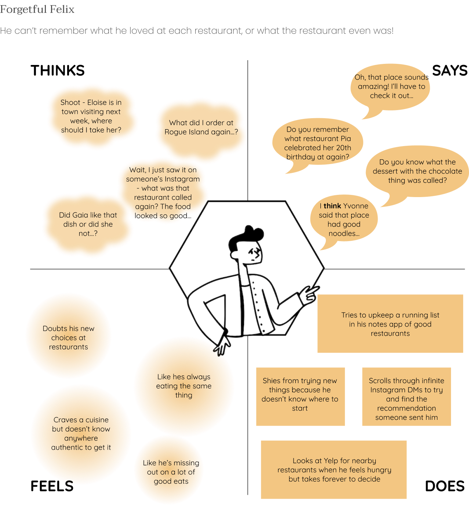

Designed as a pantry of recommendations from your closest friends and family, Potluck functions as a platform for sharing meal snaps and recommendations from (taste)buds you know and trust.
Solo Course Project
Brown University’s CSCI 0130: User Interfaces and User Experiences
User research, sketching, wireframing, prototyping, user-testing
Jan 2023 - Apr 2023
One of my friends just turned 21üéâ, and we were totally stumped for dinner party locations.
I remembered someone I followed had just had their birthday at a restaurant in town, but I couldn’t recall where it was,
despite seeing a restaurant tag with the most exquisite plate of pasta on her Instagram story just a day earlier.
As I fell further down the Instagram rabbit hole looking for this, it was no additional surprise that people seem to have
an innate desire to snap a photo before they eat - with some people dedicating entire “foodstagrams” to the craft.
I wanted to discover in what context the digital interface is used, when it intercepts a user’s routine and how often, and how the model impacts the dining experience of a user.
After learning a bit more on the motives of user behaviors in regards to food and decision, I was able to categorize common behaviors into two personas: one that’s more functional, and one that’s more exploratory.

From those findings, I set out to design an interface that focused on tried and true personal recommendations as opposed to mass reviews.


Drawing from my sketches, I moved onto formalizing and cleaning up the layout on Figma.

Main goal: Familiarize testers with how to save recommendations, how to post, and how to navigate - made sure testers gained information, with questions like “Where did this person eat?”, as well as completing basic actions of adding and saving posts
Flaws: Functioned more as guides to exploring the app (i.e. how apps usually have the “Getting Started: How-Tos” instructions in the beginning), inhibiting natural observation
Start simple: Doing my first solo project meant wearing a lot of hats, from coming up with a mock business idea
that fills a need to engineering the interactions, and that meant an overflow of ideas. Trying to tackle all of them at
once gets way too convoluted, and it’s better in the long run for the designer and the user to stay simple but clear!
Don’t assume: My struggles in balancing learnability and efficiency were largely based on my assumptions on my audience
and their skill levels! As a designer, it’s critical to weigh all experiences.
For many, food is a really sacred space, yet its treasury is also what lends itself to be so willing to be shared. However, when creating apps that model social media, we have to take a lot of caution in the extrapolation of their impacts. In dancing within this space, business and problem-solving are inextricably tied to each other, making scale a vital consideration; this is merely a seed of an idea now, but setting up proper boundaries for it early on can help its growth later on.